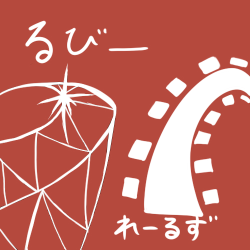
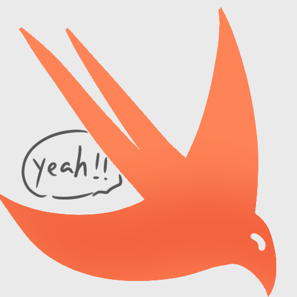
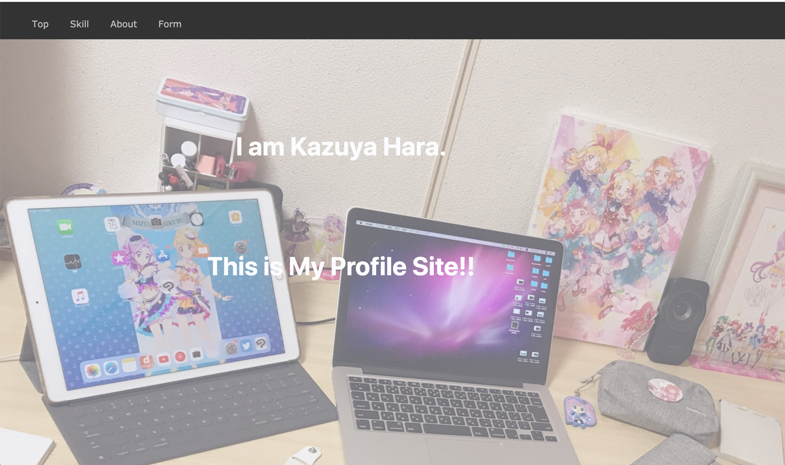
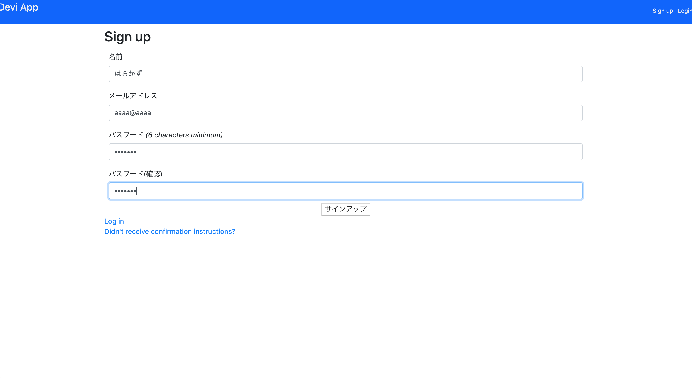

保有技術一覧
Technology List
Ruby
RubyonRailsを用いてWebアプリ開発をしています
Gem結構色々使えます。deviseさん好きです(告白)
iOSアプリ開発
Swiftを使います。マップの表示と音声再生が簡単に出来て感動しました。
好きな用語は、IdentifierとOverrideです。格好いいので。
フロントエンド
ポートフォリオサイトの作成やRailsアプリケーションの見た目を整える為、
CSS,JavaScriptのライブラリを使用しています。
getElementByIdって綴り格好いいですよね。
その他
実務：Git,MySQL,Docker,Heroku
私用：Python(Django),Photoshop,ClipStudio(イラスト制作)
成果物
Portfolio

使用した言語など：HTML,CSS,Bootstrap,ClipStudio(ロゴ作成)
説明：プロフィールサイトです。ロゴを自分で作って、世界にひとつだけのWebサイトになりました(笑) シンプルですが、自信作です！

使用した言語など：RubyonRails,HTML,SCSS,Bootstrap
説明： 入社後、最初の課題でした。 Twitterのようなサイトです。Deviseでユーザーのメール認証機能を作り、 画像投稿、ユーザー検索機能、フォロー機能などを作りました。さらに改善して、 実際に友人達に使ってもらいたいです！